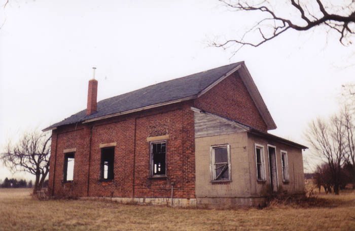
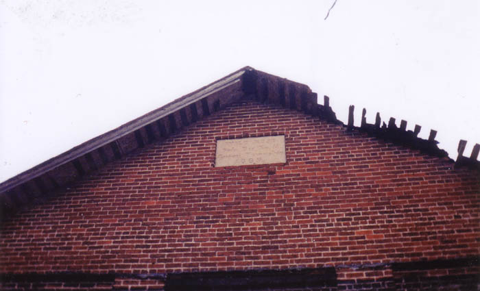
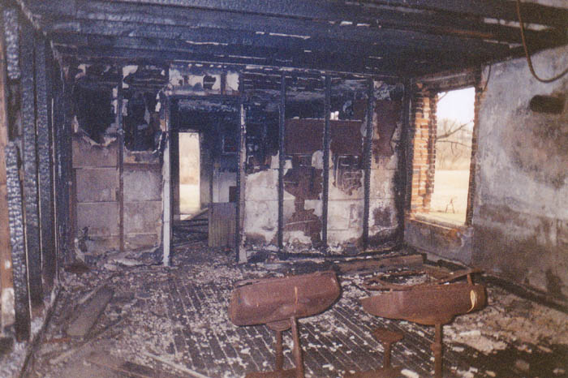
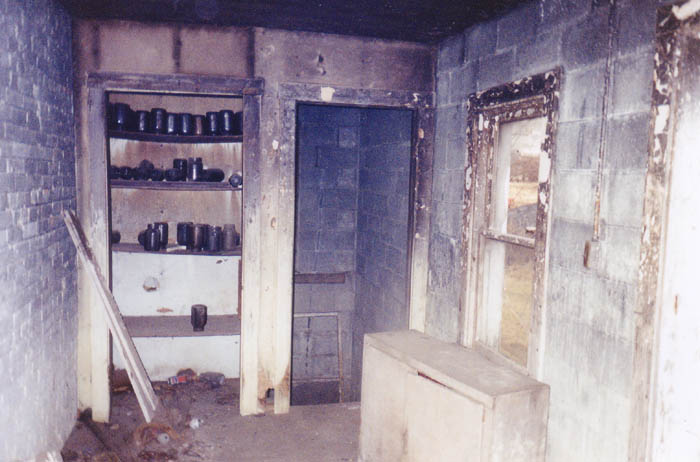
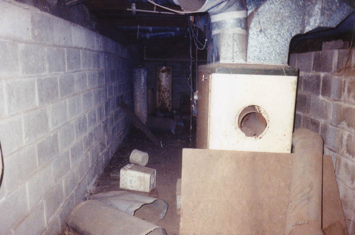

This schoolhouse is located west of Mechanicsburg in Champaign County, four miles south of Mechanicsburg on Route 4, near Route 56. I came across it accidentally while taking the long way from Toledo to London, in the early spring of 2002. Sometimes you come across cool stuff like this when you skip the freeway.

Stumbling upon a place this way usually leaves me at a loss when it comes to historical data, but the builders of this schoolhouse very considerately embedded an informational plaque near the peak of the roof. It's not quite legible in the photo above, but I can tell you that it gives the name of the schoolhouse (Wild Rose), the year it was built (1869), and the township it served (Goshen Twp.). 1869 is old for any building in the mid-United States.

The front door of this place was wide open. Inside it was obvious that there had been a fire. As you can see, there were still scorched metal desks inside. It does seem very weird for there still to have been desks inside a tiny schoolhouse like this. It couldn't have been used for classes very recently.

The term "one room schoolhouse" doesn't really apply to any schoolhouse I've been through, and this one is no exception. There's a big room up front where the desks are, but the whole floor has four or five rooms. One in the back contained a shelving unit with jars on it.

There's also a small basement. When I went downstairs I came across the furnace you see in the picture above. It looks pretty new to me. So guess was that somebody occupied this place more recently than the Great Depression. But what about the desks?
An explanation comes from Jim Hodge of Midlothian, Virginia, who writes:
I remember the school well since it was located on one of the Hodge farms where I grew up. My father attended school there around the turn of the last century as well as other of my Hodge relatives. It probably ceased being a school sometime early in the century when the local schools were consolidated in Mechanicsburg. In the 1940s, it became the home, small but comfortable, of Dick Reid and his wife who operated the Hodge farm where it was located. I remember eating lunch there around 1950 when I helped Mr. Reid with hay baling.
Not the biggest building I've ever explored, but still an interesting little place to come across. And the name of this schoolhouse reminds me of a song I like by Nick Cave and Kylie Minogue called "Where the Wild Roses Go," which is about a murder.
Back